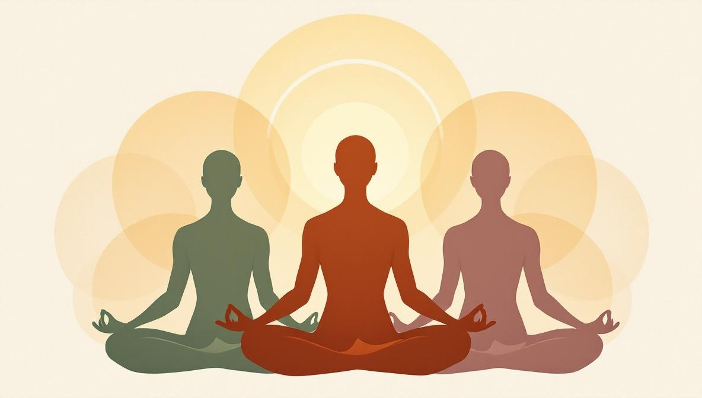

Cosa significa davvero spiritualità
La parola spiritualità deriva dal latino spiritus — respiro, soffio vitale. Già in questa origine c'è qualcosa di concreto: non rimanda a un'entità astratta, ma a ciò che rende una persona viva. Nell'uso contemporaneo, spiritualità indica la ricerca di senso, connessione e valore che va oltre il piano puramente materiale.
È una definizione volutamente ampia perché la spiritualità prende forme molto diverse. Per alcuni coincide con una fede religiosa. Per altri è una pratica contemplativa quotidiana senza alcun riferimento a un Dio personale. Per altri ancora è un senso di appartenenza alla natura, all'umanità, a un principio generativo che non ha nome. Nessuna di queste declinazioni è più legittima delle altre — ciò che le accomuna è l'orientamento verso qualcosa che eccede l'utile personale e l'immediato.
Tre elementi ricorrono in quasi tutte le definizioni oneste di spiritualità: la ricerca di senso (perché faccio quello che faccio), la connessione (con sé, con gli altri, con il mondo) e l'esperienza di qualcosa di più grande dell'ego individuale. Quando anche solo uno di questi tre manca, ciò che si descrive è qualcos'altro — psicologia, etica, filosofia di vita — ma non spiritualità in senso stretto.
Spiritualità e religione: la differenza reale
La distinzione tra spiritualità e religione è uno dei punti culturali più rilevanti degli ultimi decenni. Secondo i dati del Pew Research, il numero di persone che si definiscono «spirituali ma non religiose» (SBNR — spiritual but not religious) è cresciuto costantemente in Europa e Stati Uniti dagli anni '90. Anche in Italia la tendenza è visibile: sempre più persone coltivano una vita interiore personale senza appartenere a un'istituzione religiosa formale.
Le differenze sostanziali sono tre:
- Struttura. La religione è organizzata: ha dogmi, riti, testi sacri, una comunità di riferimento e (spesso) una gerarchia istituzionale. La spiritualità può essere interamente personale, senza strutture esterne.
- Fonte dell'autorità. Nella religione l'autorità proviene da una tradizione, da un testo rivelato o da un'istituzione. Nella spiritualità l'autorità tende a essere interna: l'esperienza personale, l'intuizione diretta, la propria pratica contemplativa.
- Rapporto con la verità. La religione tende a proporre una visione unica e coerente della realtà. La spiritualità è spesso sincretica: attinge da più tradizioni, costruisce percorsi personali, accetta che esperienze diverse possano coesistere senza che una escluda l'altra.
Niente di tutto questo significa che religione e spiritualità siano in opposizione. Molte persone vivono la loro spiritualità dentro una tradizione religiosa — cristiana, buddista, ebraica, musulmana, induista. Altre sperimentano una spiritualità personale al di fuori di qualsiasi quadro istituzionale. Entrambe le vie possono essere autentiche; entrambe possono essere anche superficiali. Ciò che conta è la qualità dell'attenzione, non la forma.

Cosa la spiritualità non è
Il marketing ha riempito la parola spiritualità di promesse che non hanno nulla a che fare con la pratica seria. Prima di descrivere cosa la spiritualità sia in concreto, è utile chiarire cosa non sia — per evitare di sprecare tempo e denaro su strade false.
La spiritualità non è la legge dell'attrazione applicata a una lista di desideri. Desiderare un risultato con sufficiente intensità non lo fa accadere. Libri e corsi che promettono ricchezza, amore o guarigione in cambio di «elevare la propria vibrazione» vendono una visione magica del mondo, non una visione spirituale. La pratica spirituale seria insegna il contrario — accettare ciò che è, anche ciò che è scomodo.
La spiritualità non è un sostituto della psicoterapia. Trauma psicologico non risolto, depressione, ansia grave, disturbi alimentari e dipendenze richiedono un intervento clinico, non contemplativo. La meditazione può sostenere un percorso terapeutico, ma non lo sostituisce. Chi ti dice che la sola pratica spirituale può guarire un disturbo clinico sbaglia — e ti espone a un rischio reale.
La spiritualità non è il prezzo di una felpa con mandala stampati sopra. L'estetica del wellness spirituale — incenso, cristalli, abbigliamento yoga di marca — può essere piacevole, ma non ha nulla a che fare con la pratica spirituale. Un meditatore regolare che vive in jeans e maglietta è più vicino a un percorso di chi è circondato da simboli curati senza alcuna disciplina quotidiana.
La spiritualità non è il bypass delle emozioni difficili. Il fenomeno chiamato bypass spirituale (spiritual bypassing) — l'uso di concetti spirituali per evitare di sentire dolore, rabbia, lutto o paura — è uno dei rischi principali di qualunque percorso contemplativo. Frasi come «tutto accade per una ragione» o «basta perdonare e lasciare andare» usate per saltare il lavoro emotivo reale fanno danno, non bene. La vera spiritualità attraversa il difficile, non lo salta.
Cosa dice la ricerca sugli effetti della spiritualità
Negli ultimi vent'anni la letteratura scientifica peer-reviewed sugli effetti delle pratiche spirituali è cresciuta in modo significativo. La meditazione mindfulness, in particolare, è stata studiata in centinaia di trial, con risultati che convergono su alcuni punti solidi.
Una meta-analisi del 2014 di Goyal e colleghi pubblicata su JAMA Internal Medicine ha analizzato 47 trial randomizzati con circa 3.500 partecipanti. La conclusione: i programmi di meditazione mindfulness producono miglioramenti moderati ma clinicamente rilevanti su ansia, depressione e dolore, paragonabili a quelli di altri interventi evidence-based come la terapia cognitivo-comportamentale. L'effetto sullo stress percepito è tra i più consistenti.
Il National Center for Complementary and Integrative Health (NCCIH) statunitense riassume decenni di ricerca sulle pratiche meditative e contemplative con tre conclusioni chiare: la meditazione regolare può ridurre i sintomi di ansia e depressione, può abbassare la pressione arteriosa in modo modesto e può migliorare la qualità del sonno. La stessa agenzia chiarisce che la meditazione non cura da sola condizioni cliniche, ma è un supporto utile in un percorso integrato.
Sulla dimensione spirituale in quanto tale — non solo la meditazione come tecnica — le ricerche di Harold Koenig alla Duke University hanno documentato una correlazione positiva tra pratica spirituale attiva (in forma religiosa o laica) e indicatori di benessere psicologico, supporto sociale e longevità. L'effetto è statistico, non magico: riguarda medie su grandi popolazioni, non l'esito individuale di una singola persona.
Le pratiche spirituali più consolidate
Un percorso spirituale passa sempre attraverso una pratica. Leggere libri, ascoltare podcast e frequentare conferenze può essere utile — ma non sostituisce l'azione quotidiana che trasforma il rapporto con sé. Ecco le pratiche con la tradizione più lunga e gli effetti più documentati, raggruppate per famiglia.
Pratiche meditative
Meditazione mindfulness. Originaria della tradizione buddista e adattata in forma laica da Jon Kabat-Zinn per contesti clinici (MBSR — Mindfulness Based Stress Reduction). Consiste nell'osservare il respiro, le sensazioni corporee e i pensieri senza giudicarli. Punto di partenza accessibile: 10 minuti al giorno, seduti comodi, occhi chiusi, attenzione al respiro.
Vipassana. Forma più tradizionale e intensa di meditazione buddista, insegnata in ritiri silenziosi di 10 giorni. Impegnativa e non adatta a chi inizia, ma per chi vi passa spesso un punto di svolta.
Preghiera contemplativa cristiana. Tradizione riscoperta nel XX secolo da figure come Thomas Merton e Thomas Keating. La Centering Prayer in particolare è tecnicamente simile alla mindfulness, ma radicata nel linguaggio teologico cristiano. Adatta a chi proviene dalla tradizione cristiana o desidera ricollegarvisi.
Pratiche corporee e di respiro
Yoga. Nato in India come un percorso spirituale completo, in Occidente diventa spesso una pratica fisica — il che ha comunque valore, ma rappresenta solo una delle otto braccia (anga) descritte da Patanjali negli Yoga Sutra. Forme più fedeli alla tradizione originale includono lo yoga Iyengar, l'Ashtanga yoga e lo yoga integrale.
Tai chi e qi gong. Pratiche cinesi che uniscono movimento lento, respiro consapevole e attenzione. Particolarmente accessibili per chi non si trova a proprio agio nella meditazione statica. Effetti documentati su equilibrio, stress percepito e qualità della vita.
Respirazione consapevole (pranayama, breathwork olotropico). Tecniche di respiro specifiche usate sia nello yoga classico (pranayama) sia in forme moderne (breathwork olotropico, metodo Wim Hof). Potenza da avvicinare gradualmente: tecniche intense possono produrre stati alterati che richiedono una guida esperta.
Pratiche riflessive e relazionali
Tenere un diario (journaling spirituale). Scrivere per dieci minuti al giorno su ciò che accade dentro di te — senza correggere, senza cercare di scrivere bene — è una delle pratiche spirituali più semplici e più sottovalutate. Chiarisce le emozioni, fa emergere pattern ricorrenti, costruisce memoria del proprio percorso.
Pratica della gratitudine. Metodo formalizzato (spesso: tre cose per cui sei grato ogni sera) che la ricerca documentata ha collegato a livelli più alti di benessere e a minori sintomi depressivi. Non è una tecnica magica — è un'abitudine che riorienta l'attenzione.
Servizio (karma yoga, volontariato, cura). Tutte le grandi tradizioni spirituali riconoscono il servizio non retribuito ad altri come parte integrante del percorso. Fare volontariato, prendersi cura di una persona vulnerabile, contribuire a una comunità sono forme di spiritualità in azione — spesso più trasformative di qualunque ritiro silenzioso.
Pratiche energetiche e olistiche
Reiki, ThetaHealing®, Pranic Healing. Discipline energetiche che hanno una dimensione spirituale e una pratica. Non sono un sostituto della psicoterapia né della medicina, ma per molte persone rappresentano una porta d'ingresso accessibile a un percorso di attenzione interiore. Scegliere un operatore serio è essenziale — vedi la guida su come trovare un operatore olistico online.
Sistemi interpretativi (astrologia, numerologia, Human Design). Queste discipline non pretendono di prevedere il futuro, ma offrono linguaggi di lettura per esplorare la propria personalità, motivazioni e pattern. Usate come strumenti di auto-conoscenza — non come oracoli — possono sostenere un percorso spirituale. Usate come sostituti delle scelte personali, diventano un problema.
Come iniziare: un percorso realistico di 30 giorni
La maggior parte delle persone che provano a iniziare un percorso spirituale falliscono nelle prime settimane per la stessa ragione: provano troppo, troppo presto. Comprare dieci libri, iscriversi a due corsi e a un ritiro nel weekend nel primo mese è una ricetta per abbandonare tutto entro la quinta settimana. Ecco invece una struttura progressiva sostenibile.
- Settimana 1 — Scegli una sola pratica e solo quella. Dieci minuti al giorno di meditazione, oppure dieci minuti di scrittura contemplativa, oppure una camminata silenziosa quotidiana. Una sola cosa, tutti i giorni. Non cambiare pratica nella prima settimana anche se ti sembra che non funzioni.
- Settimana 2 — Aggiungi un silenzio settimanale. Un'ora alla settimana senza schermi, senza musica, senza conversazione. Solo tu. Può essere una passeggiata nel parco, un caffè in un bar silenzioso, una pausa contemplativa a casa. L'obiettivo è abituarsi al silenzio interno.
- Settimana 3 — Introduci una lettura. Un solo libro, scelto con cura. Non l'ultimo bestseller sulla positività, ma un testo riconosciuto di una tradizione: il Tao Te Ching, la Bhagavad Gita, un libro di Thich Nhat Hanh o Pema Chödrön, le Confessioni di Agostino, la Filocalia. Leggi lentamente, al massimo dieci pagine al giorno.
- Settimana 4 — Prova un'esperienza strutturata. Una lezione di meditazione guidata, una sessione di yoga, una sessione introduttiva online con un operatore olistico esperto, una camminata contemplativa guidata, una liturgia domenicale se vieni dalla tradizione cristiana. Una sola esperienza, non cinque.
Alla fine del mese saprai di più sulle tue disposizioni di quanto ti avrebbero detto dieci libri letti passivamente. Da lì il percorso si allarga — ma sempre mantenendo lo stesso principio: cadenza bassa, regolarità alta, integrazione con il resto della vita.
Errori comuni da evitare
Cinque trappole ricorrenti in chi inizia un percorso spirituale. Conoscerle in anticipo non le elimina, ma ne riduce il costo.
- Confondere il maestro con il percorso. Un insegnante, un maestro o un operatore può essere utile — ma il percorso è il tuo. Chi ti chiede fiducia assoluta, ti isola dai tuoi legami precedenti o ti chiede cifre sproporzionate non è un maestro: è un problema.
- Cercare scorciatoie. Nessuna tradizione spirituale autentica promette risultati rapidi. Le pratiche reali richiedono anni. Chi promette trasformazioni radicali in un weekend vende qualcos'altro — al meglio motivazione, al peggio illusione.
- Confondere emozione intensa con progresso spirituale. Piangere durante una meditazione, sentire sensazioni insolite, fare un sogno forte non sono in sé segni di progresso. Possono esserlo — ma solo l'integrazione nella vita quotidiana lo dimostra.
- Ritirarsi dal mondo. Un percorso spirituale autentico ti rende più capace di stare nel mondo, non meno. Se dopo mesi di pratica ti senti più alienato, più giudicante verso gli altri, meno capace di mantenere relazioni, la pratica sta andando nella direzione sbagliata — o hai bisogno di integrare un supporto psicologico.
- Confrontarsi con il percorso degli altri. Ogni percorso ha i suoi tempi. Confrontare il proprio inizio con i vent'anni di pratica di qualcun altro è inutile e crea solo frustrazione. L'unico confronto utile è tra te oggi e te tre mesi fa.
Quando un supporto spirituale può aiutare
Un percorso spirituale può essere interamente solitario. Per molte persone, però, un supporto esterno accelera il processo ed evita errori prevedibili. Tre figure possono servire, con ruoli molto diversi:
- Il direttore spirituale o la guida di una tradizione. Dentro al cristianesimo, al buddismo, all'ebraismo, all'islam e ad altre religioni esistono figure riconosciute che accompagnano il percorso personale all'interno della tradizione. Generalmente a costo basso o gratuiti, dato che rientrano nel lavoro delle comunità religiose.
- L'operatore olistico. Se lavori con discipline energetiche o sistemi interpretativi (Reiki, ThetaHealing®, astrologia, numerologia, Human Design, Costellazioni Familiari), un operatore olistico verificato online può sostenerti. I criteri di scelta sono descritti nella guida Operatore Olistico Online: Come Trovare il Professionista Giusto. Prezzi realistici in Italia: tra 60 e 120 euro a sessione online.
- Lo psicoterapeuta con sensibilità alla dimensione spirituale. Se il percorso fa emergere contenuti emotivi che eccedono ciò che puoi gestire da solo, uno psicoterapeuta (meglio se con formazione in psicologia transpersonale o sensibilità a temi esistenziali) è la figura giusta. Non in opposizione alla pratica spirituale, ma in integrazione con essa.
Cerchi un punto d'ingresso serio in una disciplina olistica?
Holistic Unity ti collega con operatori olistici verificati — ThetaHealing®, Reiki, astrologia, numerologia, Human Design, Costellazioni Familiari, Ayurveda. Sessioni online, profili trasparenti, prezzi onesti.
Esplora gli OperatoriFonti e riferimenti
- Meta-analisi sulla mindfulness: Goyal M. et al., «Meditation Programs for Psychological Stress and Well-being: A Systematic Review and Meta-analysis», JAMA Internal Medicine, 2014;174(3):357–368. Indicizzato su PubMed.
- NCCIH su meditazione e pratiche mente-corpo: National Center for Complementary and Integrative Health (NIH), sintesi delle evidenze su meditazione, mindfulness, yoga e pratiche contemplative — nccih.nih.gov/health/meditation-and-mindfulness.
- Spiritualità e salute: Koenig H.G., «Religion, Spirituality, and Health: The Research and Clinical Implications», ISRN Psychiatry, 2012, Article ID 278730. Indicizzato su PubMed. Duke University, Center for Spirituality, Theology and Health.
- Dati SBNR (spirituali ma non religiosi): Pew Research Center, ricerca continuativa sul panorama religioso e sulla categoria «spiritual but not religious» — pewresearch.org/religion.
- Bypass spirituale — letteratura clinica: Welwood J., Toward a Psychology of Awakening, Shambhala, 2002 — opera che ha introdotto il termine «spiritual bypassing» nella letteratura clinica. Cashwell C.S. e colleghi hanno sviluppato successivamente il costrutto su riviste di counseling professionale indicizzate su PubMed.
Domande frequenti
Qual è il significato di spiritualità?
Spiritualità è la ricerca di senso, connessione e valore oltre il mero piano materiale. Non coincide necessariamente con la religione: una persona può essere spirituale senza appartenere a una fede istituzionale, e una persona religiosa può vivere la propria spiritualità all'interno di una tradizione. Il termine indica un modo di rapportarsi con sé stessi, con gli altri e con qualcosa di più grande — chiamato Dio, natura, coscienza, universo o semplicemente vita.
Qual è la differenza tra spiritualità e religione?
La religione è un sistema strutturato di credenze, riti e comunità condivisi con una tradizione storica (cristianesimo, islam, buddismo, ebraismo, induismo). La spiritualità è un'esperienza più personale e meno istituzionale: può svilupparsi dentro una religione o al di fuori di qualsiasi tradizione. Molte persone oggi si definiscono spirituali ma non religiose (SBNR — spiritual but not religious), una categoria in crescita in tutti i paesi occidentali secondo i dati Pew Research.
Come si fa a iniziare un percorso spirituale?
Si inizia da una pratica regolare e semplice, non da un libro o un guru. Dieci minuti al giorno di meditazione, una camminata silenziosa nella natura, la tenuta di un diario delle gratitudini, l'osservazione del respiro. La regolarità conta più dell'intensità. Dopo qualche settimana di pratica continuativa diventa naturale leggere, esplorare tradizioni o lavorare con un operatore — ma il punto di partenza è sempre concreto, non concettuale.
La spiritualità ha effetti reali sulla salute?
Sì, in modo documentato. Studi pubblicati su riviste come JAMA Psychiatry e ricerche del National Center for Complementary and Integrative Health hanno collegato pratiche spirituali regolari (meditazione, preghiera, mindfulness) a riduzione di stress, ansia e sintomi depressivi, miglior qualità del sonno e maggiore resilienza. Non si tratta di guarigione magica: si tratta di effetti misurabili sul sistema nervoso autonomo e sul benessere psicologico complessivo.
Cos'è il bypass spirituale e come si evita?
Il bypass spirituale (spiritual bypassing) è l'uso di concetti o pratiche spirituali per evitare di affrontare emozioni difficili, traumi non risolti o problemi concreti. Esempi: ripetere «tutto accade per una ragione» davanti a un lutto, dire «perdona e lascia andare» per evitare di sentire rabbia legittima, dare la colpa all'aura negativa di una persona invece di affrontare un conflitto. Si evita combinando la pratica spirituale con il lavoro psicologico — terapia, supporto, ascolto reale del proprio dolore.
Si può essere spirituali senza credere in Dio?
Sì. La spiritualità non richiede una fede teistica specifica. Tradizioni come il buddismo, alcune forme di taoismo, lo stoicismo e molte pratiche contemplative moderne non si fondano sull'esistenza di un Dio personale. La spiritualità può articolarsi come connessione con la natura, ricerca di senso, coltivazione della consapevolezza o impegno etico verso gli altri. Ciò che la distingue da una pura visione materialista è l'apertura a una dimensione di senso che va oltre l'immediato utilitario.